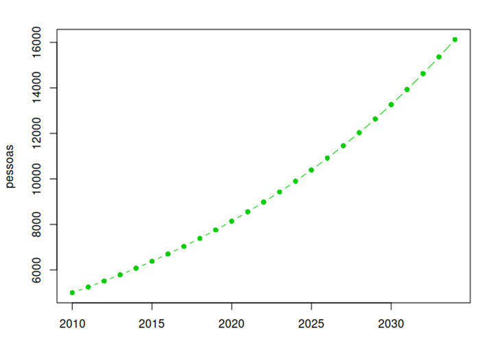

Módulo 2 | Aula 3
Construindo modelos populacionais
Crescimento populacional constante
Vamos considerar a população de Canto Feliz, um município que tinha 5.000 pessoas de acordo com o censo de 2010 e que tem crescido a uma taxa anual constante de 5% ao ano. Um gestor precisa de uma estimativa para a população em 2034, a fim de planejar uma campanha vacinal.
Seguindo o passo a passo descrito anteriormente, já temos a pergunta bem definida: “Qual será a estimativa para a população em 2034?” Já sabemos quanto e o que precisa ser estimado.
Depois, vemos que o enunciado apresenta informações muito importantes: a população no tempo inicial, que corresponde ao ano de 2010. E a informação de que a população cresce a uma taxa anual constante. Esse dado é chave para conseguir construir um modelo de projeção.
A taxa de variação por unidade de tempo, que será notada por a é a variação relativa do tamanho da população entre dois momentos de tempo distantes 1 unidade de tempo entre si; no caso, 1 ano. Suponhamos que no momento de tempo n o tamanho da população seja Pn e, no instante seguinte, n + 1 , a população seja Pn + 1 . Então, a taxa de variação a é definida por:
Em que a = 5% = 5/100 = 0,05 ao ano
Vamos supor que, em um determinado ano, que tomaremos como o momento inicial do processo e que chamaremos de ano 0, a população tenha tamanho P0.
Segundo exemplo:
Vamos agora reescrever a equação anterior para calcular o tamanho da população a cada novo ano. Veja que a é o incremento a cada ano, que é uma fração fixa da população existente.
Agora, com base nesse modelo, podemos já responder à pergunta. Será necessário calcular a população a cada ano, pois o modelo só relaciona um ano com o anterior, em uma sequência:
P(2010) = 5000
P(2011) = 5000 + 0.05 * 5000 = 5250
P(2012) = 5250 + 0.05 * 5250 = 5512,5
...
P(2034) = 16.125,5
Na prática, isso pode e deve ser feito no computador!
Esse tipo de cálculo, em que se repete uma operação várias vezes em uma sequência, chama-se “iteração”. Ao final temos uma tabela com valores de população para cada ano, que pode ser representada em um gráfico:

Logo, o gestor precisará organizar uma campanha vacinal para 16.126 pessoas, aproximadamente.
O modelo que acabamos de deduzir é o famoso modelo de crescimento geométrico. O modelo geométrico tem aplicação na demografia, servindo para descrever a variação do tamanho de uma população ao longo do tempo quando o tempo é uma variável discreta, e a taxa de variação do tamanho da população por unidade de tempo é suposta constante. É usado para estimar o tamanho de uma população em diferentes momentos do tempo — questão de grande interesse em epidemiologia, uma vez que o tamanho da população é um dos componentes de diversos indicadores de saúde, como taxas de mortalidade ou de incidência de doenças. O modelo geométrico também é utilizado em cálculos financeiros, como no cálculo de rendimento da caderneta de poupança a juros mensais constantes (modelo de juros compostos).
Uma forma mais usual de apresentar o modelo geométrico é por meio de sua fórmula geral, que relaciona qualquer ano com o ano inicial, assim evitando ter que iterar a cada ano. Veja no quadro a seguir como podemos gerar uma fórmula que relaciona qualquer ano com o ano inicial, resultando na fórmula geral:
Agora fica fácil usar esse modelo para resolver o problema inicial da População de Canto Feliz:
Assim, o modelo geométrico nos fornece uma ferramenta prática e eficiente para projeções populacionais quando a taxa de crescimento é constante. A fórmula geral permite calcular diretamente a população em qualquer ano futuro, sem necessidade de iterações intermediárias. Contudo, é importante lembrar que esse modelo assume uma taxa de crescimento fixa ao longo do tempo — simplificação que pode não se aplicar a todas as situações reais, como veremos no próximo tópico.